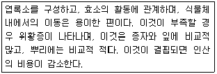
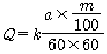
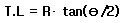

산림기사 (2010-07-25 기출문제)
1과목: 조림학
1. 암석이 토양을 구성하는 작은 입자로 분해된 후에 하천의 물에 의해 운반되어 다른 곳으로 옮겨 쌓여서 형성된 토양은?
- 잔적토
- 붕적토
- 마사토
- 충적토
(정답률: 71%)

2. 다음 수종 중에서 산성 토양에 상대적으로 잘 적응 할 수 있는 수종은?
- 개오동나무
- 오리나무
- 소나무
- 네군도단풍나무
(정답률: 58%)
3. 다음 수목의 조적작용에 대한 설명으로 틀린 것은?
- 일반적으로 일장에 대한 감수 부위는 앞이다.
- 일반적으로 정아는 측아보다 그 세력이 더 우세하다.
- 부적당한 환경요인 때문에 휴면이 생기는 것을 자발휴면이라 한다.
- 졸참나무, 상수리나무, 굴참나무 등의 잎은 가을에 갈색으로 되어 죽고 봄이 되어 새눈이 나올 때 낙엽된다.
(정답률: 62%)
4. 화기의 구조와 종자 및 열매의 구조관계를 바르게 연결한 것은?
- 주심 - 배
- 배주 - 열매
- 주피 - 종피
- 씨방 - 종자
(정답률: 79%)
5. 제벌에 대해 바르게 설명하고 있는 내용은?
- 중간 수입을 주요 목적으로 하는 벌채작업이다.
- 작업의 효율성을 고려하여 겨울철에 실시하는 것이 원칙이다.
- 윤벌기 내에 가지치기와 병행하여 단 1회만 실시하는 것이 원칙이다.
- 풀베기 작업이 종료된 유령림에서 불량목을 제거하여 임상을 정비하는 작업이다.
(정답률: 73%)
6. 산림의 간접 효용이 아닌 것은?
- 홍수나 산사태를 방지한다.
- 이산화탄소를 흡수하고 산소를 방출한다.
- 파티클 보드의 원료로 이용된다.
- 휴양의 기회를 제공한다.
(정답률: 72%)
7. 환원법에 의한 활력검사에 대한 내용으로 잘못된 것은?
- 테트라졸륨의 반응은 휴면종자에도 잘 나타난다.
- 침엽수의 종자는 배와 배유가 함께 염색되도록 한다.
- 15°온도 하에서 약 2시간 동안 정온기 안에 둔다.
- 테트라졸륨 대신 테룰루산칼륨 1%액도 사용된다.
(정답률: 59%)
8. 수꽃의 화아원기 형성시기가 가장 빠른 수종은?
- 참나무류
- 삼나무류
- 소나무류
- 가문비나무류
(정답률: 43%)
9. 묘목을 1ha에 장방형으로 규칙적인 식재를 하고자 한다. 몇 주가 필요한가? (단, 열간 거리는 4m, 주간거리는 3m이다.)
- 83주
- 133주
- 833주
- 1033주
(정답률: 84%)
10. 다음은 무슨 원소에 대한 설명인가?

- K
- N
- Ca
- Mg
(정답률: 73%)
11. 다음 중 삽목을 할 때 주의해야 할 점에 대한 내용으로 틀린 것은?
- 작업 중 삽수가 건조하거나 눈이 상하지 않도록 주의한다.
- 비가 온 후 상면이 습하면 작업을 하지 않는 것이 일반적이다.
- 삽목토양으로는 배수성이 좋은 토양보다는 양료가 충분히 있는 양토계통의 토양을 이용하는 것이 좋다.
- 삽수는 끝눈은 남향으로 항하게 하고 포플러류 같은 속성수는 삽수를 수직으로 세우고 기타수종은 삽수의 상단면이 북향이 되게하여 30°정도 경사지게 세운다.
(정답률: 79%)
12. 강송을 양묘하려고 채종하였다. 열매를 탈각하여 5Kg을 얻었으며 정선하여 얻은 순정종자는 4.5Kg이었다. 이 종자의 발아율을 조사하니 80% 였다면 이 종자의 효율은 몇 %인가?
- 90
- 80
- 72
- 64
(정답률: 70%)
13. 파종 1개월 정도 전에 노천매장하여 발아촉진에 도움이 되는 수종은?
- 소나무
- 잣나무
- 느티나무
- 은행나무
(정답률: 68%)
14. 지위가 중인 일반 활엽수림의 간벌개시 연령으로 바른 것은?
- 10 ~ 20년
- 20 ~ 30년
- 30 ~ 40년
- 40 ~ 50년
(정답률: 50%)
15. 잣나무의 가지치기에서 강도가 강했을 때 가지치기 효과라고 할 수 없는 것은?
- 무절재의 생산
- 수간의 완만도가 향상
- 수고의 성장량 증가
- 목하의 수광량 증가
(정답률: 65%)
16. 택벌작업의 특성을 설명한 내용으로 틀린 것은?
- 심미적 가치가 가장 높다.
- 음수수종의 갱신에 적합하다.
- 일시의 벌채량이 많으므로 경제상 효율적이다.
- 소면적임지에 보속생산을 하는데 가장 적합한 방법이다.
(정답률: 73%)
17. 순림에 관한 특징 설명으로 옳은 것은?
- 입지를 완전하게 이용할 수 있다.
- 경제적으로 가치 있는 나무를 대량생산할 수 있다.
- 숲의 구성이 단조로워서 병충해, 풍해의 저항력이 강하다.
- 침엽수로만 형성된 순림에서는 임지의 악화가 초래되는 일이 없다.
(정답률: 81%)
18. 해송에 대한 기술 중 옳지 않은 것은?
- 수피는 흙갈색이다.
- 동아는 붉은색이다.
- 줄기는 단일절이다.
- 해안지역에 따른 평지에 많이 분포한다.
(정답률: 62%)
19. 다음에 제시된 수종들 중에서 일반적으로 파종 1년 후에 판갈이 작업을 실시하는 것이 좋은 수종으로만 짝지은 것은?
- 삼나무, 주목
- 소나무, 잣나무
- 소나무, 낙엽송
- 전나무, 독일가문비나무
(정답률: 57%)
20. 모수의 조건에 대한 설명으로 틀린 것은?
- 우세목 중에서 고른다.
- 유전적 형질이 좋아야 한다.
- 풍도에 대한 저항력이 있어야 한다.
- 종자를 적게 생산하는 개체를 남긴다.
(정답률: 83%)
2과목: 산림보호학
21. 세균에 의한 수목병인 것은?
- 밤나무 뿌리혹병
- 소나무 잎녹병
- 포플러 모자이크병
- 오동나무 빗자루병
(정답률: 72%)
22. 흡즙성 해충이 아닌 것은?
- 박쥐나방
- 버즘나무방패벌레
- 솔껍질깍지벌레
- 느티나무벼룩바구니
(정답률: 75%)
23. 수목병의 병징에 해당되지 않는 것은?
- 황화현상
- 총생
- 가지마름
- 균사조직
(정답률: 63%)
24. 수목에 발생하는 녹병 및 녹병균에 관하여 잘못 설명한 것은?
- 담자포자는 2n의 핵상을 갖는다.
- 여름포자는 대체로 표면에 돌기가 있다.
- 소나무 혹병균의 중간기주는 졸참나무이다.
- 녹병균 중에는 인공배양에 성공한 것도 있다.
(정답률: 55%)
25. 다음 중 지중화에 대한 설명으로 가장 알맞은 것은?
- 나무의 줄기가 타는 불이다.
- 산불 중 가장 흔히 일어나는 불이다.
- 지표화로부터 연소되는 경우가 대부분이다.
- 불곷도 없이 서서히 오랫동안 계속 탄다.
(정답률: 72%)
26. 버즘나무방패벌레에 관하여 잘못 설명한 것은?
- 성충으로 월동하고, 월동한 성충은 봄에 무더기로 산란한다.
- 1995년 충북 청주에서 국내 첫 발생이 확인 되었다.
- 피해엽 뒷면에는 검정색의 배설물과 탈피각이 붙어있어 쉽게 알 수 있다.
- 주로 버즘나무와 철쭉류의 잎을 가해하여 피해를 주는 흡즙성 해충이다.
(정답률: 54%)
27. 솔잎혹파리의 생활사에 관한 설명으로 옳은 것은?
- 1년에 1회 발생하며 알로 충영속에서 월동한다.
- 1년에 2회 발생하며 지피물 속에서 성충으로 월동한다.
- 1년에 2회 발생하며 성충으로 충영 속에서 월동한다.
- 1년에 1회 발생하며 유충으로 땅 속 또는 충영 속에서 월동한다.
(정답률: 78%)
28. 묘포에 발생하는 모잘록병에 대하여 잘못 설명한 것은?
- 병원균이 단독 또는 복합적으로 관여하여 병을 일으킨다.
- 일반적으로 2~3년생 묘목보다는 당년생묘목에서 발생이 많다.
- 주로 토양이 습한 경우에 발생하므로 배수관리를 철저히 하면 예방에 도움이 된다.
- 질소비료를 사용하여 묘목의 초기생장을 빠르게 하면 발병을 줄일 수 있다.
(정답률: 81%)
29. 지구상에 존재하는 생물종 중 포유류의 구성 비율은?
- 약 0.02%
- 약 0.2%
- 약 2%
- 약 20%
(정답률: 48%)
30. 대추나무 빗자루병의 내과요법으로 많이 이용되고 있는 약제는?
- 베노밀수화제
- 스트렙토마이신수화제
- 아진포스메틸수화제
- 옥시테트라사이클린수화제
(정답률: 78%)
31. 대추나무 빗자루병에 대한 설명으로 틀린 것은?
- 매개충은 마름무늬매미충이다.
- 광범위살균제로 수간주사하여 방제한다.
- 병에 감연된 부위는 열매가 열리지 않는다.
- 병든 나무의 분주를 통하여 병이 퍼져나간다.
(정답률: 62%)
32. 세포질 내에서 전분이 유지분으로 전환되는 유지수는?
- 참나무류
- 자작나무
- 물푸레나무
- 오리나무
(정답률: 56%)
33. 약제를 식물체의 뿌리, 줄기, 잎 등에 흡수시켜 깍지벌레와 같은 흡즙성 곤충을 죽게 하는 살충제는?
- 기피제
- 유인제
- 소화중독제
- 침투성살충제
(정답률: 74%)
34. 해충의 경제적 피해수준을 가장 적절하게 설명한 것은?
- 경제적 피해를 주는 최대의 밀도를 말한다.
- 일반적 환경주간하에서 해충의 평균 밀도로서 허용이 가능한 밀도 수준을 말한다.
- 경제적 가해수준에 달하는 것을 억제하기 위하여 직접적인 방제를 해야 하는 밀도를 말한다.
- 경제적 피해를 주는 최소의 밀도 수준으로 해충에 의한 손실액과 방제비용이 같을 때의 해충의 밀도를 말한다.
(정답률: 71%)
35. 포유류 중 천연기념물에 해당하지 않는 동물은?
- 산양
- 족제비
- 물범
- 반달가슴곰
(정답률: 62%)
36. 외국으로부터 도입된 해충이 아닌 것은?
- 매미나방
- 흰개미
- 솔잎혹파리
- 미국흰불나방
(정답률: 73%)
37. 대기오염에 의한 수목의 피해양상을 잘못 설명한 것은?
- 온도가 낮고 흐린 날에 피해가 크다.
- 여름~가을보다는 봄~여름에 더 많이 나타난다.
- 바람이 없고 상대습도가 높은 날에 피해가 크다.
- 밤보다는 동화작용이 왕성한 낮에 피해가 심하다.
(정답률: 63%)
38. 다음 중 가해식물의 종류가 가장 많은 산림해충은?
- 미국흰불나방
- 솔나방
- 천막벌레나방
- 솔잎혹파리
(정답률: 87%)
39. 잎을 주로 식해하는 해충이 아닌 것은?
- 솔나방
- 미국흰불나방
- 솔잎혹파리
- 오리나무잎벌레
(정답률: 63%)
40. 조상에 대한 설명으로 옳은 것은?
- 상렬이 생긴다.
- 식물의 생육휴면기에 생긴다.
- 봄에 서리가 내릴 경우에 발생한다.
- 목화가 되지 않은 연약한 새가지에 피해를 준다.
(정답률: 44%)
3과목: 임업경영학
41. 흉고직경 20cm, 수고 10m인 잣나무의 입목재적은 얼마인가? (단, 흉고형수는 0.4702 이다.)
- 0.1667m3
- 0.1576m3
- 0.1476m3
- 0.1756m3
(정답률: 63%)
42. 수간석해의 방법에 대한 내용으로 틀린 것은?
- 벌채점의 위치는 지상 1.2m로 한다.
- 구분의 길이를 2m로 하는 경우 흉고 이상은 2m마다 원판을 채취하며 최후의 것은 1m로 한다.
- 단면의 반경은 4방향으로 측정하여 평균한다.
- 반경은 일반적으로 5년 간격으로 측정한다.
(정답률: 75%)
43. 어떤 산림기계의 취득원가가 5,000,000원, 잔존가치가 500,000원이고 그 내용연수가 50년 이라고 할 때, 이 기계의 연간 감가상각비를 정액법으로 구하면?
- 90,000 원
- 100,000 원
- 500,000 원
- 1100,000 원
(정답률: 73%)
44. 소나무 임분의 벌기평균생장량(MAI)이 6m3/ha이고, 윤벌기가 50년이라고 할 때 이 임분의 법정연벌량과 법정수확률은 각각 얼마인가?
- 300m3/ha, 4%
- 300m3/ha, 5%
- 250m3/ha, 4%
- 250m3/ha, 5%
(정답률: 71%)
45. 임업경영의 총자본을 그 경영에 종사하는 사람의 수로 나눈 값을 무엇이라 하는가?
- 자본장비도
- 자본보유율
- 자본회수계수
- 자본수익률
(정답률: 74%)
46. 다음 중 산림문화 휴양에 관한 법률에 의거하여 자연휴양림에 대한 설명으로 적절한 것은?(관련 규정 개정전 문제로 여기서는 기존 정답인 4번을 누르면 정답 처리됩니다. 자세한 내용은 해설을 참고하세요.)
- 국가 및 지방자치단체 외의 자가 자연휴양림을 조성하려는 경우 10헥타르 이상의 산림이어야 한다.
- 산림문화 휴양기본계획은 5년마다 수립 검토 하여야 한다.
- "자연휴양림"이라 함은 국민의 정서함양 보건휴양 및 산림 교육과 동시에 경제림 조성을 위하여 조성한 산림을 말한다.
- 광역시장 도지사는 지역산림문화 휴양계획을 10년마다 수립 시행하여야 한다.
(정답률: 56%)
47. 윤척의 사용법에 대한 설명으로 틀린 것은?
- 경사진 곳에서는 낮은 곳에서 측정한다.
- 흉고부를 측정한다.
- 흉고부에 가지가 있으면 가지 위나 아래를 측정한다.
- 수간 축에 직각으로 측정한다.
(정답률: 75%)
48. 자산액을 A, 부채액을 P, 자본액을 K라 할 때 다음의 식중 맞는 것은?
- K=A-P
- K=P-A
- K=A+P
- K=A÷P
(정답률: 55%)
49. 투자비용의 현재가에 대하여 투자의 결과로 기대되는 현금 유입의 현재가비율을 나타내는 것으로 투자효율을 결정하는 방법은?
- 수익·비용률법
- 순 현재가치법
- 투자 이익률법
- 회수기간법
(정답률: 57%)
50. 임분 각 개체목의 공간적인 위치를 파악하고 경쟁목과의 관계를 고려한 단목차원의 거리종속경쟁지수에 속하지 않는 것은?
- 수관면적중첩지수
- 상대공간지수
- 크기비율지수
- 생육공간지수
(정답률: 37%)
51. 산림의 이용구분에 따른 보전산지 중 공익용 산지가 아닌 것은?
- 요존국유림
- 보안림
- 자연휴양림의 산지
- 산림유전자원보호림
(정답률: 63%)
52. 수확을 위한 벌채는 입목의 평균수령이 기준벌기령이상에 해당하는 임지에서 실행하는데 다음 중 수확을 위한 벌채 실행방법이 아닌 것은 무엇인가?
- 솎아베기
- 골라베기
- 왜림작업
- 모수작업
(정답률: 74%)
53. 임업원가관리에서 원가의 설명에 대한 내용으로 틀린 것은?
- 특정제품이나 공정에만 발생했다는 것을 쉽게 식별할 수 있는 원가를 직접원가라 한다.
- 제품의 생산수준에 따라 비례적으로 변동하는 원가를 변동원가라 한다.
- 과거에 이미 현금을 지불하였거나 부채가 발생한 원가를 매몰원가라 한다.
- 어떤 생산수준에서 제품의 여러 단위를 더 생산할 때 추가로 발생하는 원가를 한계원가라 한다.
(정답률: 69%)
54. 산림생장에서 연년생장량은 무엇을 말하는가?
- 일정한 기간내에 현실적으로 생장한 양
- 수령 또는 임령이 1년 증가함에 따라 추가적으로 증가하는 수확량
- 일정 기간내에 생장한 양
- 현재의 임령이 벌기에 도달했을 때의 생장량
(정답률: 77%)
55. 다음 중 소생림 중심의 자연휴양림의 관리방법으로 적절한 것은?
- 인위적 관리를 통해 수목은 적게하고 잔디 및 초지가 주가 되도록 한다.
- 이용밀도가 가장 높은 공간이므로 답압에 의한 영향을 고려해야 한다.
- 인위적인 간섭이 배재되는 상태로 수림의 보육관리가 이루어 져야 한다.
- 저목림을 주로 육성하여 낮은 가지 및 입목본수를 많게 하거나 교목림으로 육성한다.
(정답률: 54%)
56. 전 세계의 조림수종 중에서 소나무속이 식재된 인공조림지 면적은 전체 조림지 면적의 몇 %정도 차지하는가? (단, FRA2000 보고서에 준한다.)
- 10%
- 20%
- 30%
- 40%
(정답률: 52%)
57. 임지기망가의 최대치에 도달하는 시기에 관한 설명으로 틀린 것은?
- 주벌수확의 증대속도가 빠를수록 임지기망가의 최대치가 빨리 온다.
- 간벌수확이 많을수록 임지기망가의 최대시기가 빠르다.
- 조림비가 많으면 많을수록 임지기망가의 최대 시기가 늦어진다.
- 이율이 높을수록 임지기망가의 최대시기가 늦어진다.
(정답률: 71%)
58. 환경해설의 원칙이 아닌 것은?
- 환경해설은 방문객의 경험 및 특성과 관련 되어야 한다.
- 환경해설은 부분이 아닌 전체를 다루어야 한다.
- 환경해설은 정보와 다르다.
- 환경해설 프로그램은 어린이와 어른을 구분하지 않는다.
(정답률: 67%)
59. 유령림에서 장령림에 이르는 중간영급의 임목을 평가하는 방법으로 가장 적합한 것은?
- 임목비용가법
- 임목기망가법
- 글라제르법
- 임목매매가법
(정답률: 69%)
60. 휴양지에서 적당한 시설이나 정보가 제공되면 참여가 기대되는 이용자의 수요를 일컫는 용어는?
- 잠재수요
- 유효수율
- 유도수요
- 표출수요
(정답률: 70%)
4과목: 임도공학
61. 다음 중 배수 구조물의 규격을 결정하는데 영향을 가장 적게 미치는 요인은 무엇인가?
- 구조물의 재질
- 지비수구역의 면적
- 집수구역의 지형 및 식생구조
- 확률강우에 의한 최대 시우량
(정답률: 61%)
62. 고저측량의 기고식 야장기입법에서 지반고를 구하는 식으로 옳은 것은?
- 기계고(I,H) + 후시 (B,S)
- 기계고(I,H) - 후시 (B,S)
- 기계고(I,H) - 전시 (F,S)
- 기계고(I,H) + 전시 (F,S)
(정답률: 65%)
63. 평판측량 결과 기선길이가 2m, 시준판 잣눈의 읽음차가 5일 때 2점간의 거리는 얼마인가?
- 30m
- 40m
- 50m
- 60m
(정답률: 55%)
64. 유량계산을 Lautterburg 공식에 의거 다음 식으로 계산 하고자 할 때 m이 의미하는 것은?(단, Q는 유량, K는 유출계수, a는 집수면적이다.)

- 수면물매
- 최대시우량
- 노반의 함유수분량
- 평균유속
(정답률: 72%)
65. 기계구입시 장비구입가격은 200만원이었고, 연이율은 5%이면 자본이자는 얼마인가?
- 10,000원
- 25,000원
- 50,000원
- 100,000원
(정답률: 19%)
66. 평판측량에 있어 평판 설치의 3요소가 아닌 것은?
- 치심
- 시준
- 표정
- 정치
(정답률: 73%)
67. 저습지대에서 노면의 침하를 방지하기 위하여 사용하는 노면은?
- 토사도
- 사리도
- 섶길
- 쇄석도
(정답률: 70%)
68. 임도의 설계에서 임도노선의 곡선설정시 사용되는 다음 식에서 T.L은 무엇인가? (단, R은 곡선반지름, θ는 교각이다.)

- 곡선길이
- 곡선반경
- 외선길이
- 접선길이
(정답률: 60%)
69. 일반적으로 흙쌓기는 시공 후에 시일이 경과하면 수축하여 용적이 감소되고 시공면이 어느 정도 침하하므로 더쌓기를 해야 하는데 흙쌓기 높이의 어느 정도를 더 쌓아야 하는가?
- 4%이내
- 5 ~ 10%
- 11 ~ 15%
- 16%이상
(정답률: 73%)
70. 임도건설이 끼칠 수 있는 악영향으로 관련이 적은 것은?
- 단위 면적 당 임목 생장량이 급감한다.
- 야생동식물이 이동하는 통로가 단절된다.
- 성토부 흙이 침식되어 계곡수가 오염된다.
- 야생동물과 희귀식물의 서식처가 파괴된다.
(정답률: 59%)
71. 산악지 급경사지역의 긴비탈면이나 완경사지에서 주로 선택하는 임도노선 선정방식은?
- 계곡임도
- 사면임도
- 능선임도
- 산정림의 개발
(정답률: 56%)
72. 자침 편차가 변화하는 주된 내용이 아닌 것은?
- 일변화
- 규칙변화
- 주기변화
- 년변화
(정답률: 71%)
73. 설RP속도 40(Km/시간)으로 건설된 간선임도 종단곡선의 길이(m)에 대한 기준은?
- 50m 이상
- 40m 이상
- 30m 이상
- 20m 이상
(정답률: 61%)
74. 임도 종단면도는 종단측량 결과에 의거 수평축척과 수직축척을 표시하여 제도하는데 옳은 축척은?
- 수평축척은 1:1000, 수직축척은 1:200
- 수평축척은 1:200, 수직축척은 1:1200
- 수평축척은 1:1000, 수직축척은 1:100
- 수평축척은 1:100, 수직축척은 1:1000
(정답률: 67%)
75. 비탈면물매가 비교적 완만하고 유량이 적으며, 토사의 유송이 적은 곳, 특히 경관을 필요로 하는 곳에 설치하는 수로는?
- 돌수로
- 떼수로
- 콘크리트블록수로
- 콘크리트수로
(정답률: 78%)
76. 연암으로 이루어진 사면에 낙석의 우려가 있고 용수가 적을 때 사면의 안정성을 유지하기 위한 공법은?
- 떼붙이기공
- 식수공
- 파종공
- 콘크리트 붙이기공
(정답률: 62%)
77. 임도시공에 따른 토적계산법에서 실제의 토적보다 약간 많은 값이 나오지만 일반적으로 도로와 철도의 토적계산에 널리 이용되는 계산식은?
- 등고선법
- 주상체공식
- 중앙단면적법
- 양단면적평균법
(정답률: 51%)
78. 사리도의 유지보수 내용으로 바람지하지 못한 것은?
- 횡단물매를 10~15%정도로 하여 노면배수가 양호하도록 한다.
- 노면의 정지는 가능한한 비가 온 후 습윤한 상태에서 실시한다.
- 방진처리는 물, 염화칼슘, 폐유, 타르, 아스팔트 유제등이 사용된다.
- 갓길이나 노측이 높아져 배수가 불량할 경우 그레이더로 정형하고 롤러로 다진다.
(정답률: 64%)
79. 벌도대상목의 벌도 전 준비 작업으로 틀린 것은?
- 벌도목 수간의 가슴높이까지 가지를 먼저 자른다.
- 벌도목 주위의 돌을 치우고, 대피로의 방해물을 제거한다.
- 벌도목 주위에 서 있는 고사목이나 지장이 되는 나무는 벌목작업 전에 먼저 벌도 제거해야 한다.
- 벌도목 근주 부근의 톱질할 부근에 융기부나 팽대부가 있는 나무는 벌도목의 재적을 증가시키기 위해 이를 보전해야 한다.
(정답률: 75%)
80. 다음 중 임업토목시공에서 벌목 제근작업에 가장 적당한 토공기계는?
- 백호우
- 불도져
- 트랙터셔블
- 로드롤서
(정답률: 54%)
5과목: 사방공학
81. 땅깎기 비탈면의 안정과 녹화를 위한 적용공법에 관한 설명으로 틀린 것은?
- 모래층비탈면은 절토공사 직후에는 단단한 편이나 건조해지면 붕락되기 쉬우므로 전면적객토를 요한다.
- 자갈이 많은 비탈면은 모래가 유실 후, 요철면이 생기기 쉬우므로 떼붙이기 보다 분사파종공법이 좋다.
- 점질성 비탈면은 표면침식에 약하고 동상·붕락이 많으므로 떼붙이기공법이 적절하다.
- 경암 비탈면은 풍화·낙석 우려가 많으므로 부분 객토 식생공법이 적절하다.
(정답률: 58%)
82. 계간사방 공사에서 돌골막이의 돌쌓기 기울기는 얼마를 표준으로 하는가?
- 1:0.1
- 1:0.3
- 1:0.5
- 1:0.7
(정답률: 75%)
83. 우리나라 토양을 구성하고 있는 모재중 분포 비율이 가장 높은 것은?
- 화강 편마암계
- 결정 편암계
- 현무암
- 충적암
(정답률: 77%)
84. 폴 15m, 깊이 2m인 직사각형 야계수로에서 수심1m, 유속 2m/s로 유출되고 있을 때 유출유량은?
- 60m3/s
- 80m3/s
- 20m3/s
- 30m3/s
(정답률: 42%)
85. 사방댐의 축조재료 중 친환경적 재료와 거리가 먼 것은?
- 콘크리트
- 통나무
- 흙
- 자연석
(정답률: 75%)
86. 흐르는 물에 의한 침식이 아닌 것은?
- 우격침식
- 면상침식
- 누구침식
- 구곡침식
(정답률: 75%)
87. 특별한 규격에 맞게 깨낸 돌로서 산림토목의 축석에 사용되는 석재는?
- 견치돌
- 마름돌
- 호박돌
- 들돌
(정답률: 82%)
88. 선떼붙이기 공법에 사용되는 떼 중 가장 윗부분에 사용되는 떼의 명칭은?
- 선떼
- 갓떼
- 받침떼
- 바닥떼
(정답률: 78%)
89. 중력사방댐의 안정조건 중 전도에 대한 안정을 위해서는 합력작용선이 제저 중앙의 얼마이내를 통과해야 하는가?
- 1/2
- 1/3
- 1/4
- 1/5
(정답률: 72%)
90. 사면 붕괴와 산사태 발생원인 중 자연적 요인에 속하는 것은?
- 강수에 의한 지표수 유출
- 임도공사 시 성토면 붕괴
- 채석장 법면의 사면 절취
- 모두베기 작업에 의한 산지 침식
(정답률: 82%)
91. 식생의 성립이 사면안정에 미치는 영향 중 안정측의 요소에 해당되지 않는 것은?
- 잔디의 생육
- 교목군락의 생육
- 심근성 목본의 생육
- 식생매트의 설치
(정답률: 44%)
92. 주케이블은 없고 되돌림줄 위에 반송기를 실어서 반송기의 하부에서 되돌림줄과 짐당김줄을 연결하는 방식으로 소량의 간벌 및 택별에 이용하는 케이블설치 방식은?
- 호스팅 캐리지식
- 던햄식
- 러닝 스카이라인식
- 모노 케이블식
(정답률: 61%)
93. 지표면의 침식과정이 옳게 전개된 것은?
- 누구침식→구곡침식→면상침식→우격침식
- 누구침식→우격침식→면상침식→구곡침식
- 우격침식→누구침식→구곡침식→면상침식
- 우격침식→면상침식→누구침식→구곡침식
(정답률: 79%)
94. 기울기가 완만하고 수량이 적으며 토사의 유송이 적은 곳에 시설되는 산복 수로공은?
- 떼붙임 수로
- 찰붙임 수로
- 메붙임 수로
- 콘크리트 수로
(정답률: 74%)
95. 속도랑에서 가장 많이 사용되는 수로횡단면형은?
- 반원형
- 사다리꼴형
- 직사각형
- 활꼴형
(정답률: 45%)
96. 비탈면안정을 위해 인공절개지 높이가 19m일 때 소단은 몇 개가 필요한가?
- 1
- 2
- 3
- 4
(정답률: 48%)
97. 막깬돌의 규격은 돌의 길이를 앞면 크기의 몇 배이상으로 하는가?
- 0.5배
- 0.9배
- 1.2배
- 1.5배
(정답률: 66%)
98. 다음 계천 사방공작물 중 토사생산구역에서의 구곡침식의 방지가 주목적인 공작물은?
- 골막이
- 바닥막이
- 기슭막이
- 사방댐
(정답률: 50%)
99. 다음 조건에서 프로세서의 감가상각비를 KWF법에 의해 구하면? (단, 장비내구년수가 20년, 장비의 경제적 수명이 2000시간, 장비의 구입가격이 240,000,000원, 실제 연간 가동시간 120시간이다.)
- 1,200,000 원/시간
- 120,000 원 /시간
- 1,000,000 원/시간
- 100,000 원/시간
(정답률: 45%)
100. 직선유로에서 유수의 차단효과를 볼 수 있는 사방댐의 설정 방향으로 올바른 것은?
- 유심선에 직각으로 설정
- 유심선에 평행방향으로 설정
- 유심선에 45°의 방향으로 설정
- 유심선에 관계없이 설정
(정답률: 80%)